Launchpad 翻译指南
作者：TeliuTe 来源：基础教程网
三、创建项目 返回目录 下一课要在 Launchpad 上翻译，需要先创建一个项目 project；
1、创建项目
1）登录后显示欢迎页面，在右边找到一条“Register a project”注册项目，点击进入，
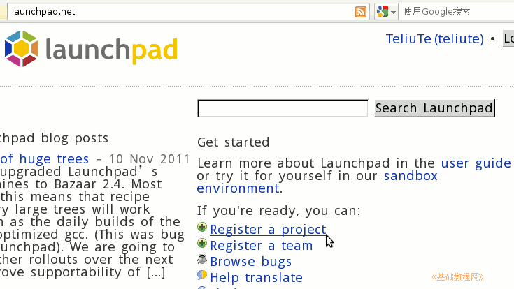
2）在出来的项目信息页面依次输入项目名称、访问链接、标题、简介，然后点下面的“Continue”按钮继续；
(注意：如果只是想练习，请点上边的“Oh, I want to create a test project”按钮，进入演示页面)；
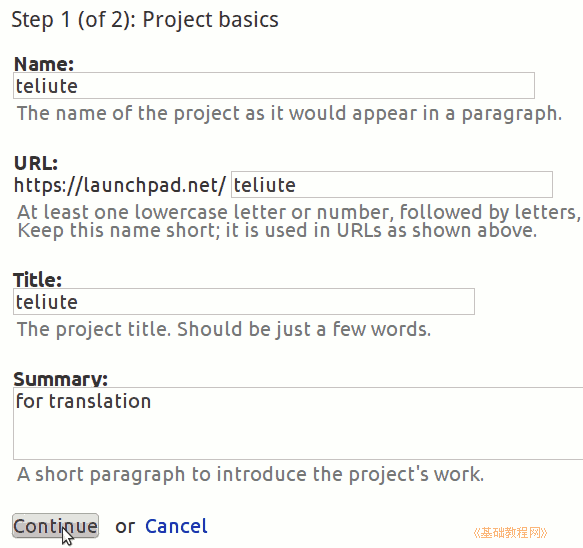
3）接下来在询问页面中，点击下边的“No, this is a new project”，创建新项目；
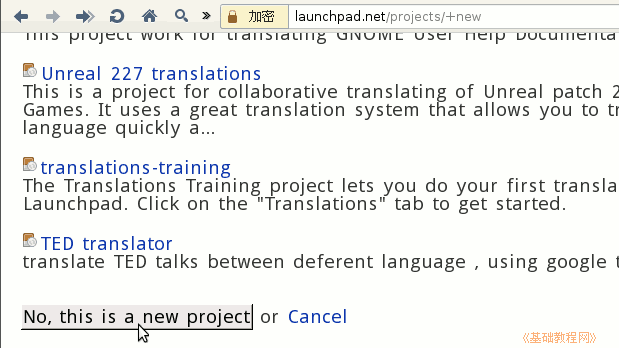
4）在出来的页面下边选择许可协议，打勾选中 Simplified BSD License 协议，这个将用于翻译，还可以选其他的，然后点下边的“Complete Registration”按钮完成；
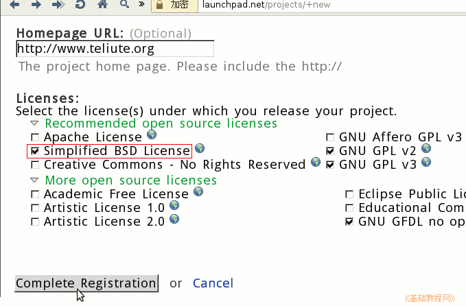
5）然后进入项目主页，记下地址栏中自己的项目地址，然后在右边的设置面板里找到“Configure translations”，配置翻译；
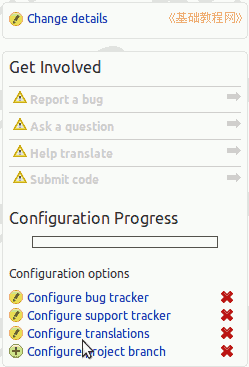
6）在设置翻译页面中，第一项选择“Launchpad”使用平台翻译，下面的翻译焦点选择当前项目的“teliute trunk”系列，点“Change”完成更改；
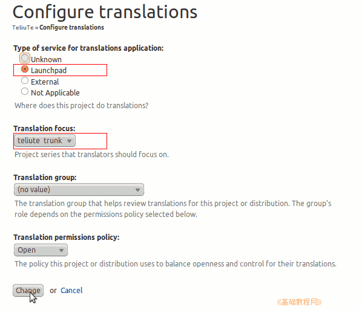
7）再点右边设置里的“Configure project branch”，设置默认的项目分支；
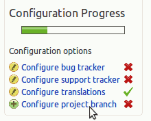
8）进入后点右边的“(choose...)”选择一个分支；
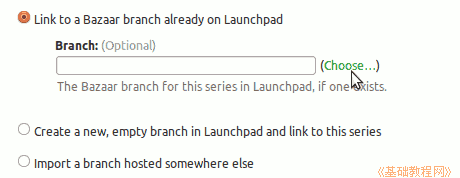
9）在出来的选择对话框里，输入 trunk，点右边的放大镜按钮搜索；
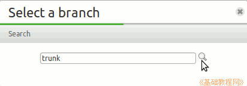
10）点击下边的搜索结果，默认的 trunk 分支；
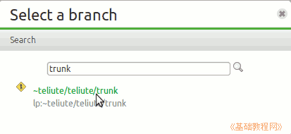
11）然后点下边的“Update”更新按钮完成，这个分支将会以 lp:teliute 来表示；
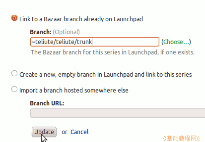
本节学习了的基础知识，如果你成功地完成了练习，请继续学习下一课内容；
本教程由86团学校TeliuTe制作|著作权所有
基础教程网：http://teliute.org/
美丽的校园……
转载和引用本站内容，请保留版权信息和本站链接。